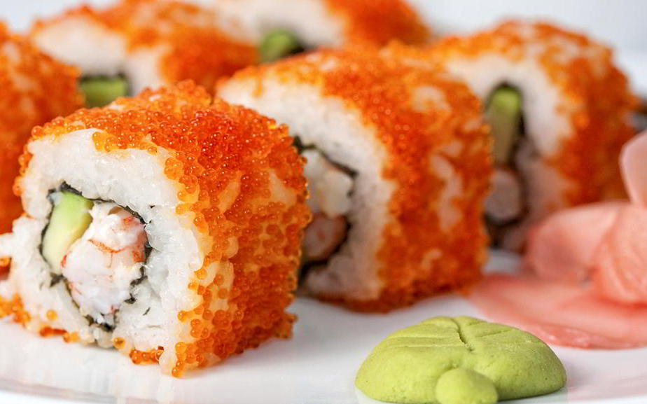
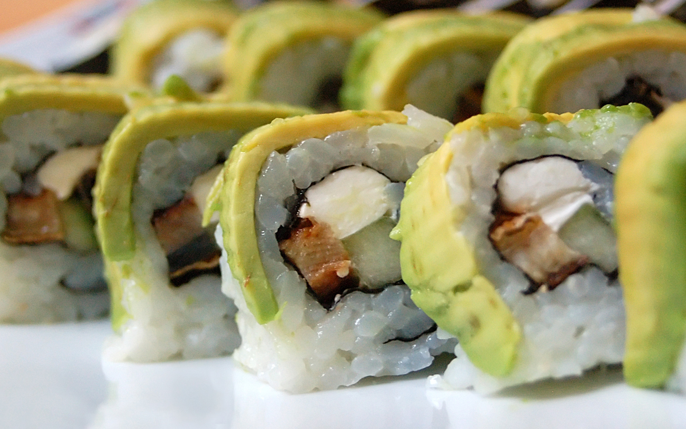
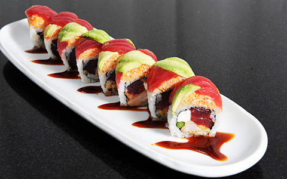
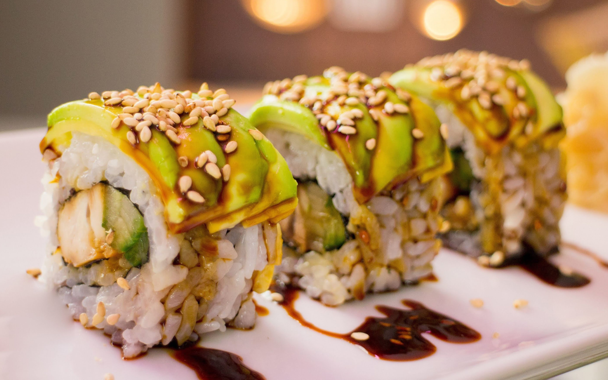
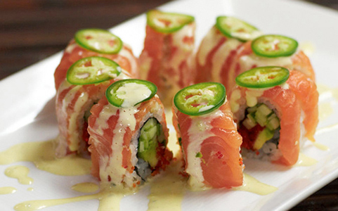

30 YEARS TO MASTER. YOURS TO SAVOR.
Make A Reservation<
>
- Mon
- Tue
- Wed
- Thurs
- Fri
- Sat
- Sun
Please call for reservations of more than 20 people. Please allow about 1.5 hours for your visit.
ABOUT TENJI
In 1985, Master sushi chef, Tenji Takahashi, opened his first of 6 Japanese restaurants in the heart of New York City. His blending of classical Japanese ingredients with modern techniques and inovations sets the bar that others aspire to meet. Takahashi was born in Fukushima, Japan. Yasu’s parents owned a small fish store and the family dined out often. As a small boy he decided to become a chef after his father took him to an up-scale authentic Japanese restaurant. After studying in Tokyo, Tenji took a job with Global Dining’s Japanese restaurant Gonpachi. In 1983, Tenji moved to the United States and quickly began the process to open his first restaurant.
Signature Dishes

$17
Tenji’s Wrap
Crab, spicy mayo, cucumber, wrapped in soy paper

$13
Spider
Deep–fried soft–shell crab, flying fish roe, and cucumber

$18
Kappa
Cucumber, rice, and sesame seed served in our specialty soy sauce.

$21
Shrimp Tempura
Shrimp tempura and cucumber topped with green onion.

$18
Tenji's Roll
Pickled mackerel, ginger, and shiso leaf
